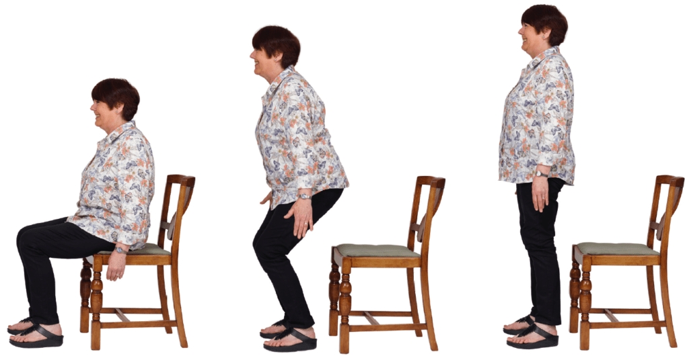
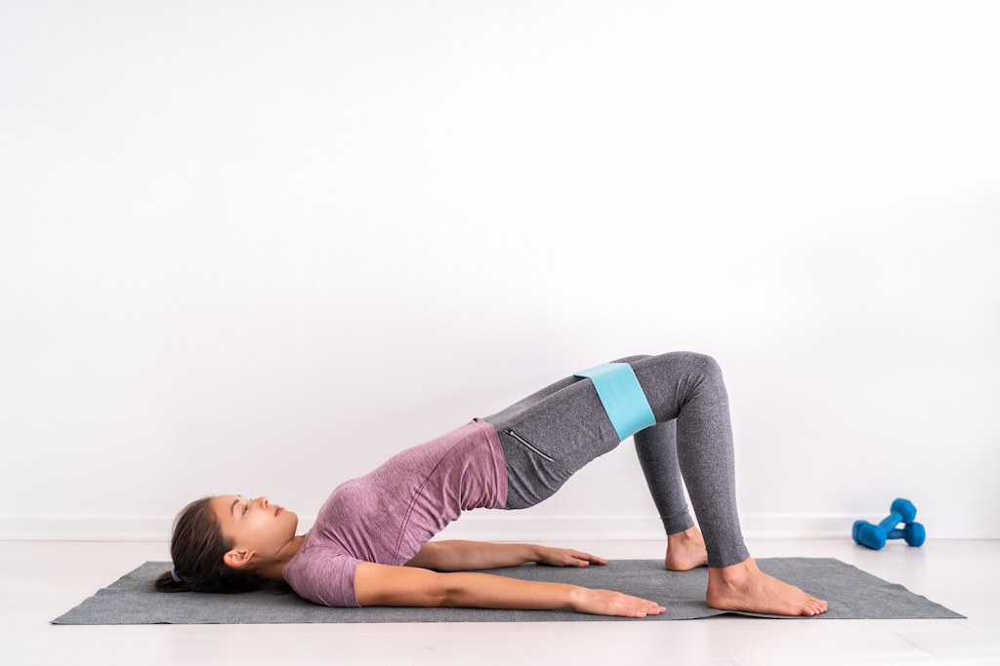
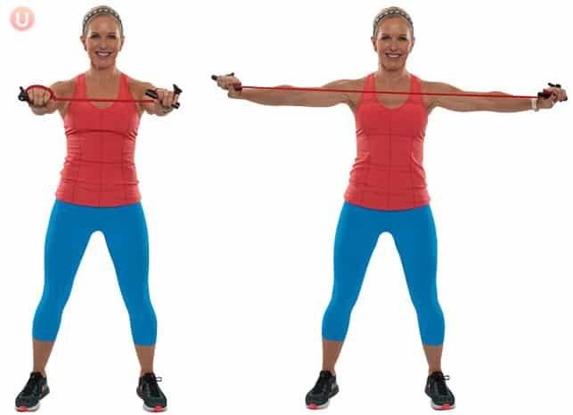
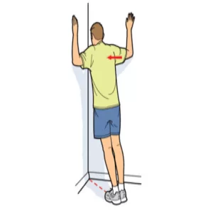
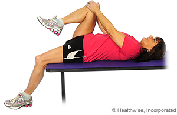
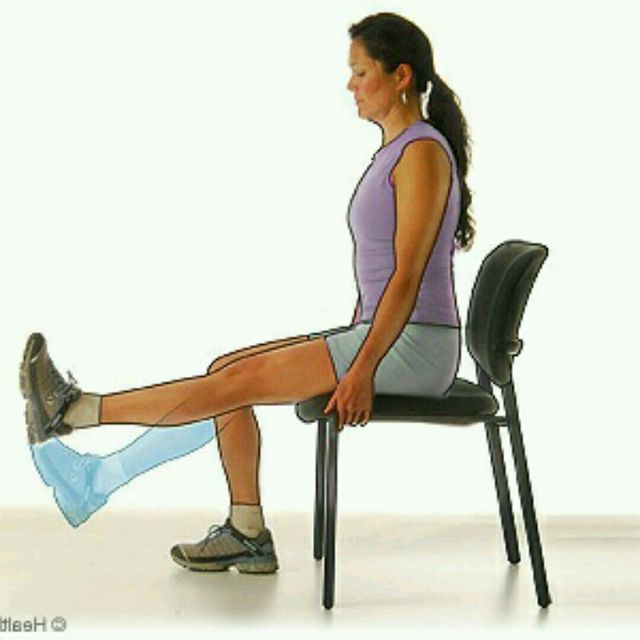

A Guide To The Best Exercises For Seniors
If you are an older adult looking to establish an exercise routine, you should, ideally, be able to incorporate 150 minutes of moderate endurance activity into your week. This can include walking, swimming, cycling, and a little bit of time every day to improve strength, flexibility, and balance.
Sit to Stand
Start by sitting in a chair with a seat high enough that you dont need to use your hand to rise. Have a second chair in front of you for safety. When you are ready stand up and down repeatedly. Repeat this exercise 10 times.
Benefits
- It's a functional exercise and strengthens leg, core, and back muscles
- It helps getting up from a low couch

Bridge
Lie on your back on your bed with your knees bent and feet flat on the mattress. Raise your hips and hold for three seconds at top of the motion. Lower your hips Repeat 10 times a day.
Benefits
- It strengthens the gluteal muscles
- it stretches hip flexor muscles

T-Rows
Sit upright in a chair and hold a resistance band in front of you at chest height. Open your arms to the right and left to stretch the band into a horizontal line, which should touch the center of your sternum when your arms are outstretched. Return to the startinf position and repeat the exercise 10 times.
Benefits
- It works the muscles of upper back and shoulder blade
- It improves upright standing position

Pec Stretch at the Wall
Stand in a doorway, hold your arm at shoulder height and place your right hand and forearm at the wall next to the door. Gently turn your torso away from your arm to feel a stretch in the chest muscles of that side. Hold the stretch for 30seconds Repeat on the left side
Benefits
- It helps to open up your chest
- It helps to loosens your biceps and the muscles of your shoulders

Hip Flexor Stretch
Lie on your back with one leg hanging off the side of the bed as you hug the opposite thigh to your chest. You should feel a stretch in the front of the hip and thigh of the hanging leg. Hold for 30 seconds, and then switch legs to repeat on the other side.
Benefits
- It improves step length in walking
- It makes walking more efficient and less energy consuming

Knee Extension Stretch
Sit uptight in a chair and prop one heel on a low stool in front of you. Gently lean forward as you hinge at your hips, feeling the stretch in the back of your knee. Hold the stretch for 1 to 3 minutes before switching legs and repeating on the other side.
Benefits
- It avoids the development of a crouched gait.
- It helps reduce lower back pain
